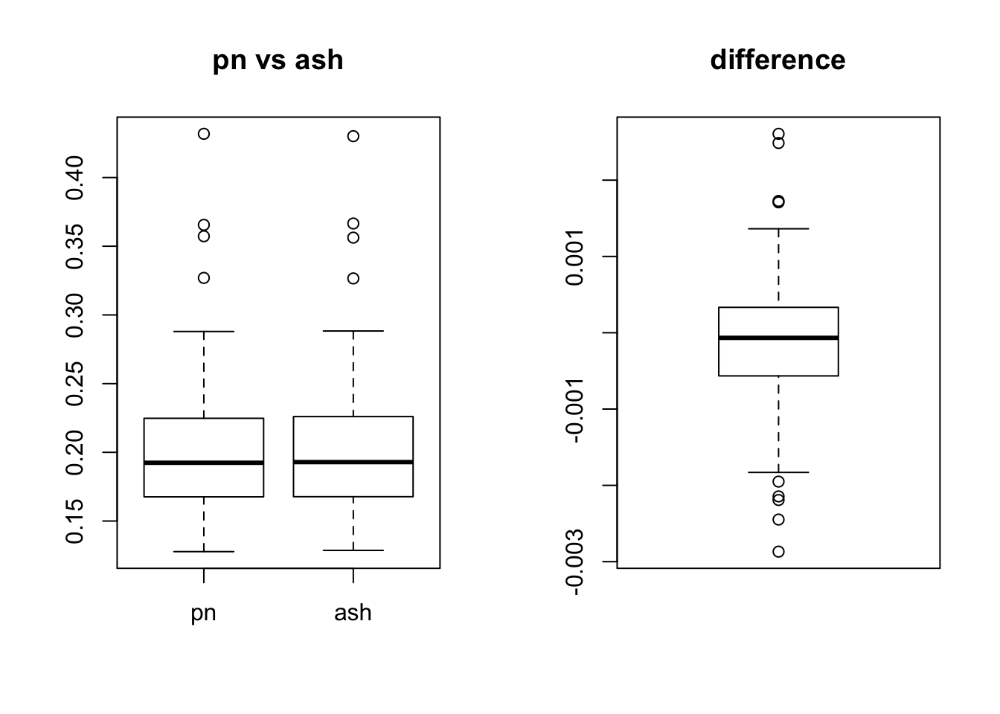

Last updated: 2018-01-03
Code version: 30629dc
we can see there is tiny difference between flash_r1 and flash_add_greedy. The difference between the ebnm_pn and ebnm_ash are tiny based on the RMSE ratio.
set.seed(99)
L_se = c( 0.25, 0.5, 1, 2, 4)
L_pi = c(1, 1,1,1,1)
L_pi = L_pi / sum(L_pi)
N = 200
P = 300
Data = datamaker(N,P,L_pi,L_se,0.1,c(1),c(1),1,sqrt(1))
library(flashr2)
data = flash_set_data(Data$Y)
f_greedy_pn = flash_add_greedy(data,Kmax=10,ebnm_fn = ebnm_pn)fitting factor/loading 1fitting factor/loading 2f_greedy_ash = flash_add_greedy(data,Kmax=10,ebnm_fn = ebnm_ash)fitting factor/loading 1
fitting factor/loading 2# here flashr2 provide 2 factors but 2nd factor is all zero.
f_pn = flash_r1(data, ebnm_fn = ebnm_pn)
f_ash = flash_r1(data, ebnm_fn = ebnm_ash)
par(mfrow = c(2, 2))
plot(f_pn$EL,f_greedy_pn$EL[,1],main = "r1 vs greedy (pn)")
plot(f_pn$EL-f_greedy_pn$EL[,1],main = "difference r1 vs greedy")
# there is tiny difference between greedy algorithm and rank one fucntion
plot(f_ash$EL,f_greedy_ash$EL[,1],main = "r1 vs greedy (ash)")
plot(f_ash$EL+f_greedy_ash$EL[,1],main = "difference r1 vs greedy")# compare the ash and pn methods
par(mfrow = c(1, 1))
plot(f_ash$EL,f_pn$EL,main = "pn vs ash (EL)")Y_hat_pn = f_pn$EL %*% t(f_pn$EF)
RMSE_pn = sqrt(mean(( Data$Y - Y_hat_pn - Data$E )^2 ))/sqrt(mean(( Data$Y - Data$E )^2 ))
Y_hat_ash = f_ash$EL %*% t(f_ash$EF)
RMSE_ash = sqrt(mean(( Data$Y - Y_hat_ash - Data$E )^2 ))/sqrt(mean(( Data$Y - Data$E )^2 ))
c(RMSE_pn,RMSE_ash)[1] 0.2084337 0.2086121Here we can see that the ebnm_pn is slightly better than ebnm_ash.
We try repeat this experiment 100 times
Sim_RMSE = function(N,P,l_pi,l_se,l_sp,f_pi,f_se,f_sp,sigmae){
Data = datamaker(N,P,l_pi,l_se,l_sp,f_pi,f_se,f_sp,sigmae)
data = flash_set_data(Data$Y)
f_pn = flash_r1(data, ebnm_fn = ebnm_pn)
f_ash = flash_r1(data, ebnm_fn = ebnm_ash)
Y_hat_pn = f_pn$EL %*% t(f_pn$EF)
RMSE_pn = sqrt(mean(( Data$Y - Y_hat_pn - Data$E )^2 ))/sqrt(mean(( Data$Y - Data$E )^2 ))
Y_hat_ash = f_ash$EL %*% t(f_ash$EF)
RMSE_ash = sqrt(mean(( Data$Y - Y_hat_ash - Data$E )^2 ))/sqrt(mean(( Data$Y - Data$E )^2 ))
return(c(RMSE_pn,RMSE_ash))
}T = 100
RMSE = array(NA,dim = c(T,2))
L_se = c( 0.25, 0.5, 1, 2, 4)
L_pi = c(1, 1,1,1,1)
L_pi = L_pi / sum(L_pi)
N = 200
P = 300
for(i in 1:T){
RMSE[i,] = Sim_RMSE(N,P,L_pi,L_se,0.1,c(1),c(1),1,sqrt(1))
}
colnames(RMSE) = c("pn","ash")
par(mfrow = c(1, 2))
boxplot(RMSE,main = "pn vs ash")
boxplot(RMSE[,1] - RMSE[,2],main = "difference")
The difference between the ebnm_pn and ebnm_ash are also tiny based on the RMSE ratio.
library(cowplot)
set.seed(99)
L_se = c( 0.25, 0.5, 1, 2, 4)
L_pi = c(1, 1,1,1,1)
L_pi = L_pi / sum(L_pi)
N = 200
P = 300
Data = datamaker(N,P,L_pi,L_se,0.7,c(1),c(1),1,sqrt(16))
data = flash_set_data(Data$Y)
f_pn = flash_r1(data, ebnm_fn = ebnm_pn)
f_ash = flash_r1(data, ebnm_fn = ebnm_ash)
Y_hat_pn = f_pn$EL %*% t(f_pn$EF)
RMSE_pn = sqrt(mean(( Data$Y - Y_hat_pn - Data$E )^2 ))/sqrt(mean(( Data$Y - Data$E )^2 ))
Y_hat_ash = f_ash$EL %*% t(f_ash$EF)
RMSE_ash = sqrt(mean(( Data$Y - Y_hat_ash - Data$E )^2 ))/sqrt(mean(( Data$Y - Data$E )^2 ))
c(RMSE_pn,RMSE_ash)[1] 0.3607005 0.3595091Here we can see that the ebnm_pn is slightly worse than ebnm_ash.
T = 100
RMSE = array(NA,dim = c(T,2))
L_se = c( 0.25, 0.5, 1, 2, 4)
L_pi = c(1, 1,1,1,1)
L_pi = L_pi / sum(L_pi)
N = 200
P = 300
for(i in 1:T){
RMSE[i,] = Sim_RMSE(N,P,L_pi,L_se,0.7,c(1),c(1),1,sqrt(16))
}
colnames(RMSE) = c("pn","ash")
par(mfrow = c(1, 2))
boxplot(RMSE,main = "pn vs ash")
boxplot(RMSE[,1] - RMSE[,2],main = "difference")sessionInfo()R version 3.3.0 (2016-05-03)
Platform: x86_64-apple-darwin13.4.0 (64-bit)
Running under: OS X 10.13.2 (unknown)
locale:
[1] en_US.UTF-8/en_US.UTF-8/en_US.UTF-8/C/en_US.UTF-8/en_US.UTF-8
attached base packages:
[1] stats graphics grDevices utils datasets methods base
other attached packages:
[1] cowplot_0.8.0 ggplot2_2.2.1 flashr2_0.3-3 ashr_2.2-3
[5] ebnm_0.1-7 MASS_7.3-47 workflowr_0.4.0 rmarkdown_1.6
loaded via a namespace (and not attached):
[1] Rcpp_0.12.14 plyr_1.8.4 git2r_0.19.0
[4] iterators_1.0.9 tools_3.3.0 digest_0.6.12
[7] tibble_1.3.3 evaluate_0.10.1 memoise_1.1.0
[10] gtable_0.2.0 lattice_0.20-35 rlang_0.1.2
[13] Matrix_1.2-11 foreach_1.4.4 rstudioapi_0.6
[16] curl_2.8.1 yaml_2.1.14 parallel_3.3.0
[19] withr_2.0.0 stringr_1.2.0 httr_1.3.0
[22] knitr_1.17 REBayes_0.85 devtools_1.13.3
[25] rprojroot_1.2 grid_3.3.0 R6_2.2.2
[28] magrittr_1.5 backports_1.1.0 scales_0.4.1
[31] codetools_0.2-15 htmltools_0.3.6 assertthat_0.2.0
[34] softImpute_1.4 colorspace_1.3-2 stringi_1.1.5
[37] Rmosek_7.1.2 lazyeval_0.2.0 doParallel_1.0.11
[40] pscl_1.5.2 munsell_0.4.3 truncnorm_1.0-7
[43] SQUAREM_2017.10-1This R Markdown site was created with workflowr